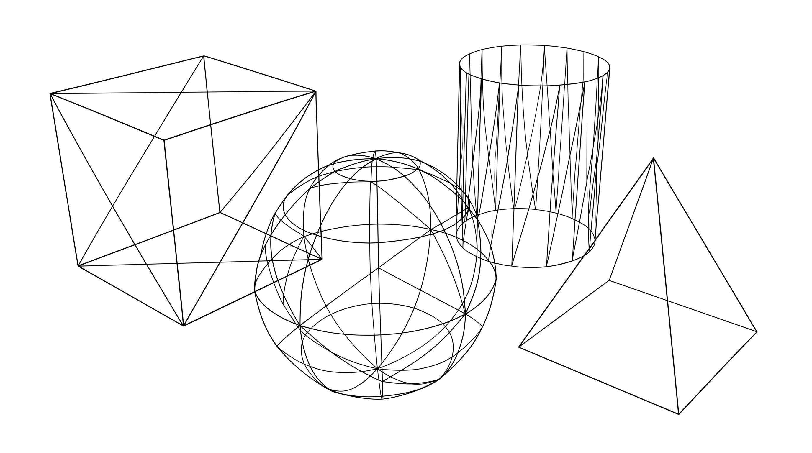
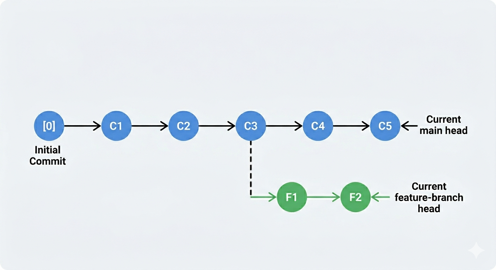

Purpose of ReadME
Read me provides a quick overview of what the project sets to achieve,
the likely uses and the guidelines of how others can contribute.
Read more
For more in-depth information, you can read the professional guide here:
The Official README Guide

Purpose of Wireframe
Wireframe serves as a foundational blueprint or mental image of
a product, it has numerous functions and most importantly
wireframe is often used in the early stages of web or app
development to prevent future, costly redesigns.
Read more
For more details on wireframing best practices and how they streamline
development, check out this guide:
The Ultimate Guide to Wireframing

What is a branch in Git
A branch represents an independent line of development in a Git repository,
allowing multiple developers to work on different features or bug fixes simultaneously
without affecting the main codebase until changes are ready to be merged.
Read more
For a deeper dive into how branching workflows operate and how to merge
your changes effectively, visit the official documentation:
Git Branching Explained